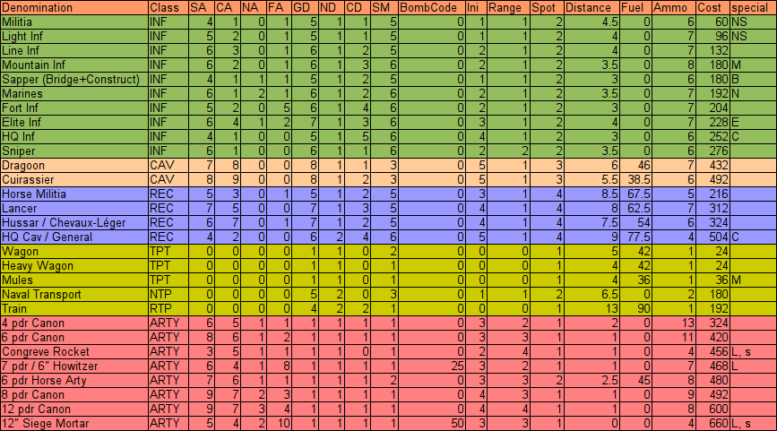
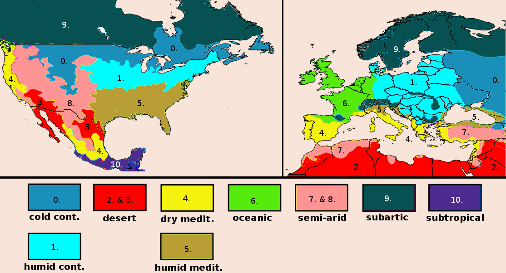
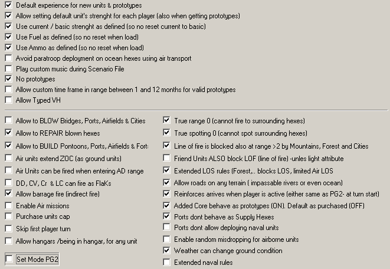

Equipment file covering revolutions and conflicts between national movements and empires from 1756 to 1850.
November 20, 2019 by lvjtn
Getting the latest executable and efile package, please visit http://sourceforge.net/projects/opengeneral/files/DailyBuild/.
The SON efile and all published campaigns are available in the official OpenGen repository.
After download, unzip the efile_son.zip into the default Open General directory. If you have an earlier version here, please delete it before unpacking the new version.
No map is part of this zip file. Open General executable will download if you miss any of them.
Appreciations to
Thanks to everybody else i forgot to mention who inspired me or contributed to my work. Of course, the responsibility for any flaws are mine :)
The efile consists of 32 nations and 970 units, covering revolutions and conflicts between national movements and empires from 1756 to 1850.
All of the nations have very similar units, weighted by national specialities (e.g. French Republic / Empire and United States in 1840s have better guns while Hungarian Kingdom in 1848 has worse attack values but higher initiative. All nations have the same detailed factions based on movement types, unit abilities and classes. A few nations like Piedmont-Sardinia, Austria and Hungary have more fronts.
Leaders on dossier_portrait.png: Daniele Manin (Venice), Robert Blum (Deutscher Bund), Nikolay I. Romanov (Russia), Julius Haynau (Austria), Artúr Görgei (Hungary), Carlo Alberto di Savoia (Piedmont-Sardinia), Ignacy Prądzyński (Poland), Abdülmecid I. (Turkey), Arthur Wellesley (United Kingdom), Friedrich II. Hohenzollern (Prussia), Comte de Rochambeau (French Kingdom), Lazare Hoche (French Republic), Napoléon Bonaparte (French Empire), Karl XIII Holstein-Gottorp (Sweden), José de Palafox y Melci (Spain), Karl Friedrich von Baden (Baden), Maximilian Joseph (Bavaria), Eugène de Beauharnais (Rheinbund) Friedrich von Württemberg (Württemberg), Friedrich August III. von Sachsen (Saxony), Georg III. Wilhelm Friedrich (Hannover), Sam Houston (Texas), Antonio López de Santa Anna (Mexico), George Washington (USA), Christian 7. af Oldenborg (Denmark), Wilhelm I. (Hesse-Kassel), Maria I (Portugal), Laurens Pieter van de Spiegel (Netherlands), Tecumseh (Natives), Ferdinando III di Borbone (Sicily), Ferdinando III d’Asburgo-Lorena (Tuscany), Ioannis Kapodistrias (Hellas).
Commanders on inspect_leader.png: Guglielmo Pepe (Venice), Józef Bem (Deutscher Bund), Ivan Paskevich (Russia), Alfred Windisch-Grätz (Austria), György Klapka (Hungary), Eusebio Bava (Piedmont-Sardinia), Józef Dwernicki (Poland), Ömer Lütfi Paşa (Turkey), William Howe (United Kingdom), Gebhard Leberecht von Blücher (Prussia), Marquis de Lafayette (French Kingdom), Napoléon Bonaparte (French Republic), Michel Ney (French Empire), Curt von Stedingk (Sweden), Juan Martín Díez (Spain), Friedrich Karl von Tettenborn (Baden), Karl Philipp von Wrede (Bavaria), Alexander Friedrich Karl von Würtemberg (Württemberg), Franz Xaver von Sachsen (Saxony), Ferdinand von Braunschweig-Wolfenbüttel (Hannover), Stephen Fuller Austin (Texas), Pedro Ampudia y Grimarest (Mexico), Zachary Taylor (USA), Joachim Castenschiold (Denmark), Georg Ernst von Gilsa (Hesse-Kassel), Miguel Pereira Forjaz (Portugal), Johan Zoutman (Netherlands), Vito Nunziante (Sicily), Marchese Federico Manfredini (Tuscany), Theodoros Kolokotronis (Hellas).
The efile uses only 11 classes: infantry, light cavalry (instead of recon), heavy cavalry (instead of tank), fortification, artillery, man-o-war (instead of battleship), frigate (instead of cruiser), corvette (instead of light cruiser), ground, naval and rail transports.
Units have higher movement range and artilleries have longer firing range than we have been familiar with well-known WW2 efiles, because the battlefields are smaller, one hex represents cca. 500-1000 meters. You need to apply a definitely different tactics to win and save the severely injured units.
All infantry and artillery can be transported by rail, but their horse carriage (and cavalry or siege gun) cannot. Trains are fast and carry mounted units on long distance, on the other hands depending on railways and stations. Players have to think about it is worth to abandon ground transport or not for using rail.
Most unit icons are colorful but one-faced png files (from PeG-NAPGEN and PeG-ACW datup, designed by Fairline, Halberdier).
Units in the same role have very similar stats, though most nations have special abilities, what are represented by +1/-1 values compared to the defaults. See this pdf file for details: efile_son-nations-weights.pdf.

SA: soft attack, CA: cavalry attack, NA: naval attack, FA: fort attack, GD: ground defense, ND: naval defense, CD: close defense, SM: skirmish modifier
B: bridge + build/repair, E: ignore trench, C: combat support + no surrender, M: mountain, N: marine, NS: no station, s: no support fire, L: lasting suppression
The sound package contains classical marches as background musics for main nations: Johann Strauss - Radetzky March (Habsburg Empire), Franz Liszt - Hungarian Battle March (Hungary), Karol Kurpiński - Marsz Warszawianka 1831 (Poland), March of The British Grenadiers (United Kingdom), Alter Marsch / Der Zorndorfer (Prussia), Jean-Baptiste Lully - La Marche des Mousquetaires Noirs (French Kingdom), La Carmagnole – Ah Ça Ira (French Republique), Le Pas Redoublé de La Garde Impériale (French Empire), The Yellow Rose of Texas (Texas), Marcha Ecos de México (Mexico), William Steffe - The Battle Hymn of the Republic (USA).
The efile related configuration files are intensely modified. Terrain, weather, movement methods differ from the values defined in Open General default tables. Some of the settings also differ from what you might be familiar.
| ZoneID | ZoneName | Used in Campaigns | Humidity | Köppen classes | ClimateCity |
|---|---|---|---|---|---|
| 0 | Continental Cold | not used yet | dry | Dwb, Dfb (East) | Moscow |
| 1 | Continental Humid | FIO, HIW, PRS | medium | Dfa, Dfb (West) | Szolnok |
| 2 | Desert Africa, Asia | not used yet | arid | Bwh, Bsh | Cairo |
| 3 | Desert America | IEM, UMW | arid | Bwh, Bsh | Tucson |
| 4 | Mediterranean Dry | IEM, UMW | dry | Csa, Csb, Cwa, Cwb, Cwc | Madrid |
| 5 | Mediterranean Humid | FIO, IEM, UMW | medium | Cfa | Venice |
| 6 | Oceanic | PRS | wet | Cfb, Cfc | Brussels |
| 7 | Semi-Arid Africa, Asia | not used yet | semi-arid | Bwk, Bsk, Dsa, Dsb | Tripoli |
| 8 | Semi-Arid America | IEM, UMW | semi-arid | Bwk, Bsk, Dsa, Dsb | Santa Fe |
| 9 | Subartic | FIO, HIW | medium | Dsc, Dsd, Dwc, Dwd, Dfc, Dfd | Oslo |
| 10 | Subtropical | IEM, UMW | wet | Am, Aw | Villahermosa |

All campaigns and scenarios use these generic scenario settings:

The most important generic campaign settings are:
When a campaign or a scenario uses a special setting, it is always mentioned in the campaign intro or the scenario briefing.
You can play 22 scenarios as the Hungarian side from Sept. 1848 to August 1849. Winning Buda (the 14th scenario) with MV is a possible end if you don’t like "Defending the Reich" style fighting. Difficulty is easy playing at 100% and intermediate at 50-75%. Other prestige levels haven’t been tested yet. 0% is not recommended, prestige on map is significant. On the other hand, playing at more than 200% doesn’t have too much sense.
All scenarios refer to a real battle, but i didn’t bother with unit names, sizes, etc. This campaign is not strictly historical, it was made for having fun. Though it is a mixture of different military leaders’ operations on the main front, General Artúr Görgei (the best tactician and most successful commander on the Hungarian side) participated in 2/3 of these battles.
If you are interested in the historical background, the related Wikipedia article could be a good start: http://en.wikipedia.org/wiki/Hungarian_Revolution_of_1848. Just please don’t forget: it’s Wikipedia where every moron can have admin rights :)
| No. | Scenario (date) | DV / V | MV | L | options* |
|---|---|---|---|---|---|
| 01 | Pákozd (September 29, 1848) | 02 | 02 | Loss | DR |
| 02 | Ozora (October 7, 1848) | 03 | 03 | Loss | DR |
| 03 | Schwechat (October 30, 1848) | 04 | 04 | 04 | DR |
| 04 | Mór (December 30, 1848) | 05 | 05 | Loss | DR |
| 05 | Szolnok (January 22, 1849) | 06 | 06 | Loss | DR |
| 06 | Tokaj (January 31, 1849) | 07 | 07 | Loss | DR |
| 07 | Kápolna (February 26, 1849) | 08 | 08 | Loss | DR |
| 08 | Szolnok-Cibakháza (March 5, 1849) | 09 | 09 | Loss | DR |
| 09 | Tápióbicske (April 4, 1849) | 10 | 10 | Loss | DR |
| 10 | Isaszeg (April 6, 1849) | 11 | 11 | Loss | DR, DS, DU |
| 11 | Vác (April 10, 1849) | 12 | 12 | Loss | DR, DP |
| 12 | Nagysalló (April 19, 1849) | 13 | 13 | Loss | DR, DS |
| 13 | Komárom-Szőny (April 26, 1849) | 14 | 14 | Loss | DR, DS, DP |
| 14 | Buda (May 4, 1849) | 15 | Win | Loss | DR |
| 15 | Csorna (June 13, 1849) | 16 | 16 | Loss | DR |
| 16 | Pered (June 20, 1849) | 17 | 17 | Loss | DR |
| 17 | Komárom-Ács (July 2, 1849) | 18 | 18 | Loss | DR |
| 18 | Komáromi kitörés (July 11, 1849) | 19 | 19 | Loss | DR, DS |
| 19 | Vác-Rétság (July 17, 1849) | 20 | 20 | Loss | DR |
| 20 | Szeged-Szőreg (August 3, 1849) | 21 | 21 | 21 | DR |
| 21 | Temesvár (August 9, 1849) | Win | 22 | 22 | DR, DS |
| 22 | Orsova (August 17, 1849) | Win | Win | Loss | DR, DS, DU, DP |
* – DR: disable auto-refit, DS: disable auto-supply, DU: disable upgrade, DP: disable purchase
All scenarios are based on the built-in tiled maps.
In the summer of 1848, most of the Hungarian infantry and cavalry units were militia ("nemzetőr" / "lovas nemzetőr"), without proper training and experience. Only a few regular ("királyi" or "königlich") regiments joined the revolutionary side from the beginning. Producing higher calliber artilleries started only in winter. The evolution regarding skill and self-discipline (XP refers only the experience) can be realized in the following upgrade line:
This evolution was a slow process, only in March-April 1849 were most of the Hungarian batallions in regular/elite state however, some of them were very talented in fall 1848 too.
All briefings are complete and bilingual (English & Hungarian).
Hungarian army followed the Austrian military standards. The largest operative military formation was (army) corps and the orders of battle were almost the same, except that a Hungarian corps had less infantry and more cavalry than an Austrian, and a Hungarian battery contained more lower calliber (6 pdr) than an Austrian. A typical corps of both sides had the following disposal:
corps ("hadtest"): 8-15.000 men + 36-48 guns
Every formation was larger in the Russian army. A Russian division was comparable to an Austrian or Hungarian corps:
division: 10-16.000 men + 48 guns
In a Russian corps there were 3-4 divisions. All three armies had only one sapper company per division.
In the game, an infantry unit represents a batallion, a cavalry unit a squadron and an artillery unit a battery. Russian units have the same strength point, because Russian troops suffered from the same cholera epidemic that had hit the Hungarians in the winter. Moreover, the Russians wore their winter coats, even though the summer heat was excessive across Hungary. An estimated 5-10% of all Russian infantry succumbed to heat exhaustion. Russians had more casualties because of illness and weather than they lost in battles!
In a few battles (e.g. Kápolna, Isaszeg, Temesvár), more corps participated on both sides, but they acted more or less independently, and the communication between them was usualy bad and delayed for making good coordination possible. That’s my reason why i put less units on the related scenarios than it would be realistic. And because i hate huge scenarios :)
Casualties -- as Open General (which is primary designed for playing WW2 scenarios) manages them -- are completely unrealistic: in this war, only during the bloodiest battles suffered a formation more than 3-5% KIA and 8-10% total loss. A way to solve this contradiction is supposing that "killed" units surrendered or retreated from the battlefield.
You can play 19 scenarios as the Austrian side from March 1848 to August 1849. Difficulty is easy playing at 100% and intermediate at 75% and hard at 50%. Other prestige levels haven’t been tested yet. 0% is not recommended, prestige on map is significant. On the other hand, playing at more than 200% doesn’t have too much sense.
All scenarios refer to a real battle, but i didn’t bother with unit names, sizes, etc. This campaign is not strictly historical, it was made for having fun. Battles cover Radetzky’s operations in Lombardia and Schlik’s operations in Hungary.
| No. | Scenario (date) | DV / V | MV | L | options* |
|---|---|---|---|---|---|
| 01 | Mailand (March 18, 1848) | 02 | 02 | Loss | DR |
| 02 | Pastrengo (April 30, 1848) | 03 | 03 | 03 | DR |
| 03 | Verona (May 6, 1848) | 04 | 04 | Loss | DR |
| 04 | Goito (May 30, 1848) | 05 | 05 | Loss | DR |
| 05 | Custozza (July 24, 1848) | 06 | 06 | Loss | DR |
| 06 | Wien (October 25, 1848) | 07 | 07 | Loss | DR |
| 07 | Budzimir-Kaschau (December 11, 1848) | 08 | 08 | Loss | DR |
| 08 | Kaschau (January 4, 1849) | 09 | 09 | Loss | DR |
| 09 | Braniskopass (February 5, 1849) | 10 | 10 | 10 | DR |
| 10 | Kápolna (February 26, 1849) | 11 | 11 | Loss | DR |
| 11 | Sollnock (March 5, 1849) | 12 | 12 | Loss | DR |
| 12 | Hatvan (April 2, 1849) | 13 | 13 | Loss | DR |
| 13 | Isaszeg (April 6, 1849) | 14 | 14 | 14 | DR, DP |
| 14 | Komorn I. (April 26, 1849) | 15 | 15 | Loss | DR |
| 15 | Pered (June 20, 1849) | 16 | 16 | Loss | DR |
| 16 | Komorn II. (July 2, 1849) | 17 | 17 | Loss | DR |
| 17 | Komorn III. (July 11, 1849) | 18 | 18 | Loss | DR |
| 18 | Venedig (August 15, 1849) | Win | Win | Loss | DR |
* – DR: disable auto-refit, DU: disable upgrade, DP: disable purchase
List of used maps: 204, 244, 282, 325, 350, 357, 403, 460, 499, 532, 708, 804, 940, 948, 987, 1013, 9526.
You can play 9 scenarios as the American side from May 1846 to September 1847.
All scenarios refer to a real battle, although on different fronts, no real formation participated in all of them.
This campaign is a conversion of Micha’s PeG mod.
| No. | Scenario (date) | DV | V / MV | L | options* |
|---|---|---|---|---|---|
| 01 | Battle of Resaca de la Palma (May 8, 1846) | 02 | 02 | Loss | DR |
| 02 | Battle of Monterrey (September 21, 1846) | 03 | 03 | Loss | DR |
| 03 | Battle of El Brazito (December 25, 1846) | 04 | 04 | Loss | DR |
| 04 | Battle of Buena Vista (February 23, 1847) | 05 | 05 | Loss | DR |
| 05 | Battle of Cerro Gordo (April 18, 1847) | 06 | 06 | Loss | DR |
| 06 | Second Battle of Tabasco (June 15, 1847) | 07 | 07 | Loss | DR, DP |
| 07 | Battle of Contreras (August 19, 1847) | 08 | 08 | Loss | DR |
| 08 | Battle of Molino del Rey (September 8, 1847) | 09 | 09 | Loss | DR |
| 09 | Battle of Chapultepec (September 12, 1847) | Win | Win | Loss | DR |
* – DR: disable auto-refit, DP: disable purchase
All scenarios are based on the built-in tiled maps.
You can play 8 scenarios as the Mexican side from May 1846 to September 1847.
Most scenarios refer to a real battle, although on different fronts, no real formation participated in all of them.
This campaign is inspired by Micha’s PeG mod.
| No. | Scenario (date) | DV | V / MV | L | options* |
|---|---|---|---|---|---|
| 01 | Batalla de Palo Alto (May 8, 1846) | 02 | 02 | Loss | DR |
| 02 | Batalla de Santa Fe (Aug 15, 1846) | 03 | 03 | Loss | DR |
| 03 | Batalla de la Cañada (Jan 24, 1847) | 04 | 04 | Loss | DR, DP |
| 04 | Batalla de Saltillo (Feb 23, 1847) | 05 | 05 | Loss | DR |
| 05 | Batalla de Sacramento (Feb 28, 1847) | 06 | 06 | Loss | DR |
| 06 | Asedio de Veracruz (Mar 24, 1847) | 07 | 07 | Loss | DR |
| 07 | Batalla de Churubusco (Aug 20, 1847) | 08 | 08 | Loss | DR |
| 08 | Sitio de Puebla (Sep 22, 1847) | Win | Win | Loss | DR |
* – DR: disable auto-refit, DP: disable purchase
All scenarios are based on the built-in tiled maps.
You can play 23 scenarios as the Prussian side from September 1756 to October 1762.
All scenarios refer to a real battle, although on different fronts, no real formation participated in all of them.
This campaign is a conversion of Micha’s PeG mod.
The scenarios are based on the built-in tiled maps.
You can play 7 scenarios as the Texian side from october 1835 to April 1836.
All scenarios refer to a real battle, although on different fronts, no real formation participated in all of them.
This campaign is a conversion of Micha’s PeG mod.
| No. | Scenario (date) | DV | V / MV | L | options* |
|---|---|---|---|---|---|
| 01 | Battle of Gonzales (October 2, 1835) | 02 | 02 | Loss | DR |
| 02 | Battle of Concepción (October 28, 1835) | 03 | 03 | Loss | DR, DS, DP |
| 03 | Grass Fight (November 26, 1835) | 04 | 04 | Loss | DR |
| 04 | Siege of Béxar (December 5, 1835) | 05 | 05 | Loss | DR, DP |
| 05 | Battle of The Alamo (February 23, 1836) | Disabled | 06 | Loss | DR |
| 06 | Battle of Coleto Creek (March 19, 1836) | 07 | 07 | Loss | RC |
| 07 | Battle of San Jacinto (April 21, 1836) | Win | Win | Loss | DR |
* – DR: disable auto-refit, DS: disable auto-supply, DP: disable purchase, RC: restart the core
All scenarios are based on the built-in tiled maps.
This Efile is licensed under CC BY-NC-SA 4.0 (https://creativecommons.org/licenses/by-nc-sa/4.0/). It means anybody has the right to use, distribute, modify or derivate the Efile until mentioning me as an original author and not adding the modifications to any commercial product.
The campaigns of this Efile are licensed under CC BY-NC-ND 4.0, which means anybody has the right to use or redistribute them until mentioning me as an original author and not adding the modifications to any commercial product; however, but modifying or derivating them is not allowed without my permission. I gladly allow converting my campaigns, but I want to know about it.
Elements of OPENGUI and SOUND folders, and the icons are made or designed by other members of PG2/OG/PeG community (see acknowledgements).
If any of the files in this package infringed someone else’s trademark, copyright, etc., please let me know in order to remove them ASAP.
This package does not support any political ideology or making war. Text files may contain offensive, politically incorrect phrases. They do not represent my attitudes to any nations or ethnic groups (whether they were involved in these conflicts or not). This kind of language refers only the liberal nationalism widespread in the 19th century.
If you have any questions or suggestions, you can find me on JP’s Panzercentral forum or you can mail me at lvjtn9 AT gmail DOT com
All feedback and comments are welcome!
Csaba Zsadányi-Nagy (aka lvjtn)